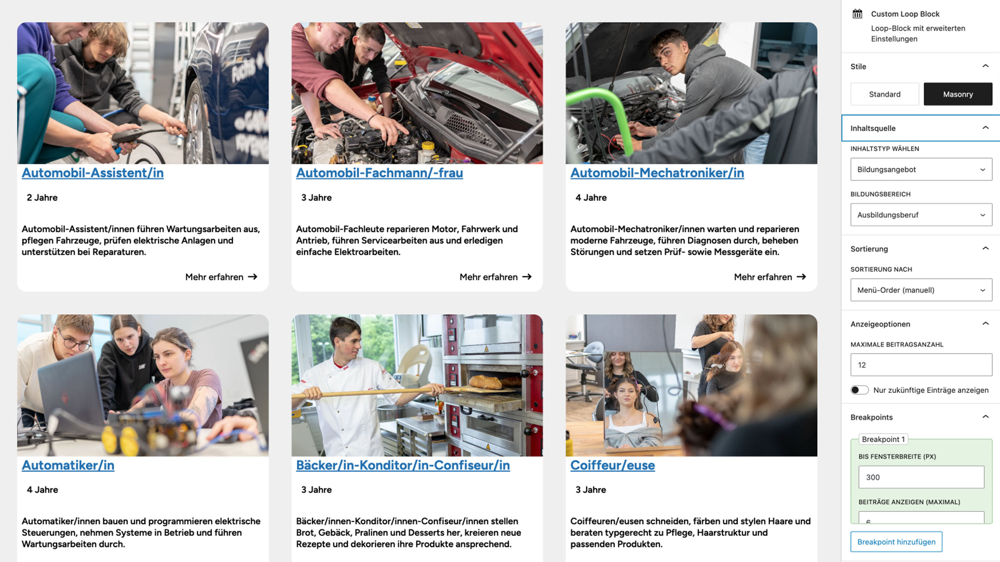

Theme

Block-Plugins



Loop Block
Gibt Beiträge, Seiten oder CPTs dynamisch im gewünschten Layout aus.
Content for Loop Block
Universeller Inhalts-Block für Loops wie News, Veranstaltungen oder Unterseiten.
UD Contact Card – Associations & Music
Zeigt Kontaktinfos zu Vereinen oder Musikgruppen.
Carousel Block
Erstellt responsive Slider mit Swiper.js.
Accordion Block
Interaktiver Akkordeon-Block mit animierter Höhe.
Breadcrumb Block
Zeigt den Navigationspfad einer Seite an.
Breadcrumb Block
Zeigt den Navigationspfad einer Seite an.